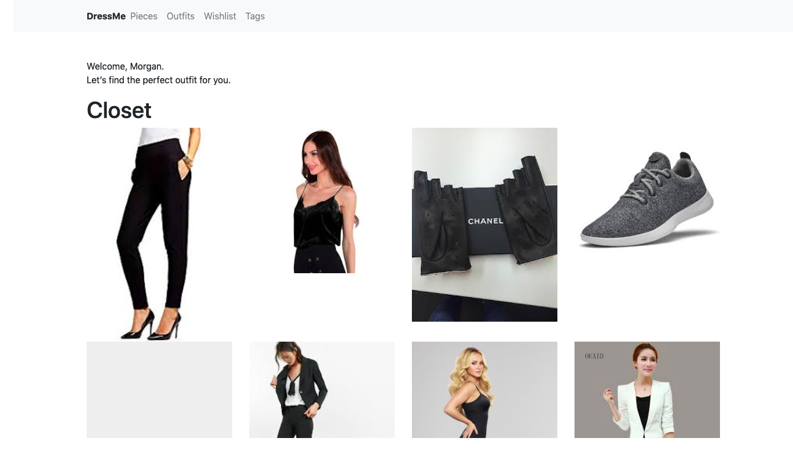
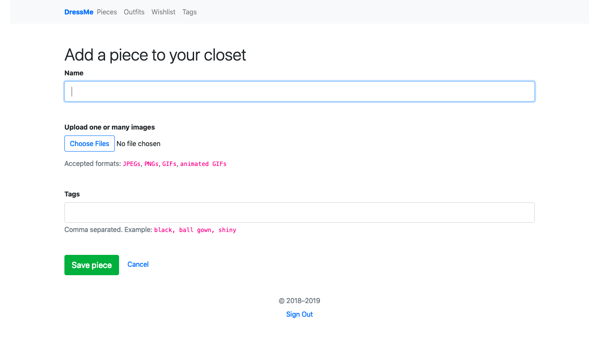
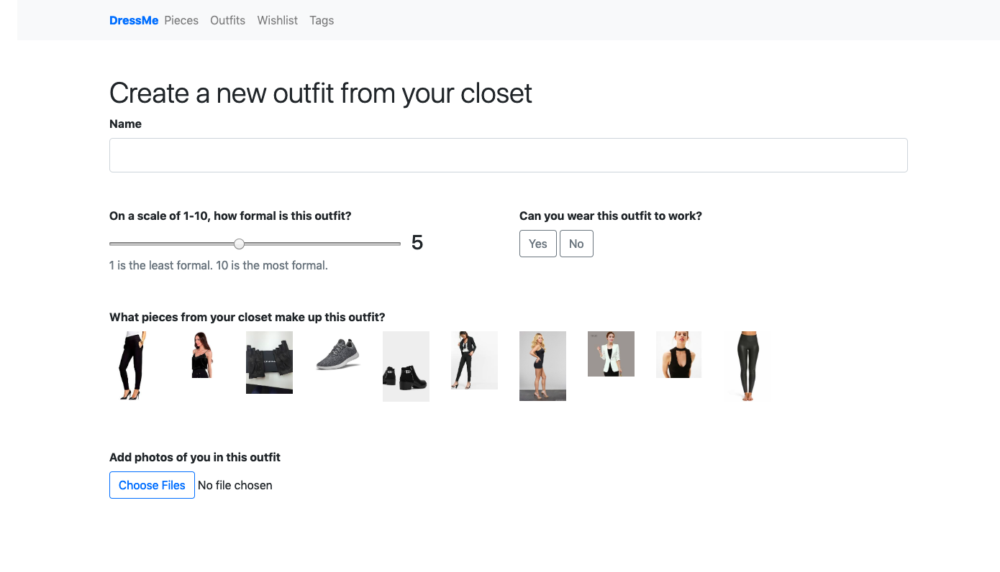
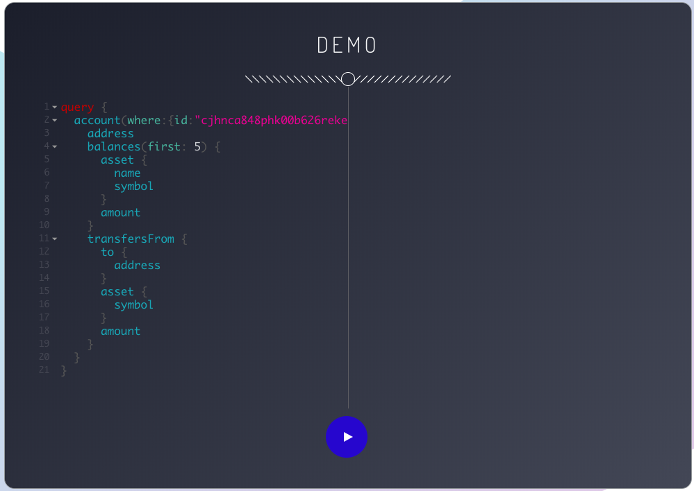
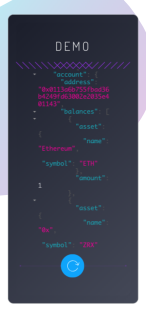

DressMe
DressMe is an outfit picker web application built with Ruby on Rails. It is currently in development.



The Graph UI
The Graph is a query protocol for the Blockchain. As a contracted UI engineer with the team, I customized the graphiQL
UI for The Graph. I used React, Javascript and CSS to make the tool responsive.


Tableau
For my final code school project, my group and I cloned Instagram. We had 5 days to do it. In the future we would like
to improve functionality and build in cross-browser compatability. This app is best seen in a Chrome browser. We
used Amazon S3, Redux and React.

Authors: Yuval Allweil, Nicky Evers and Morgan Fogarty
Tweets From Space
For my second to last code school project my group and I developed and styled this application from the ground up using
the Twitter and Google Maps APIs. This app gives users the ability to look up tweets by hashtag or screen name and
plot them by location as viewed "from space".

Authors: Morgan Fogarty, Grayson Meindl, Ivy Patton and Chris Wallace